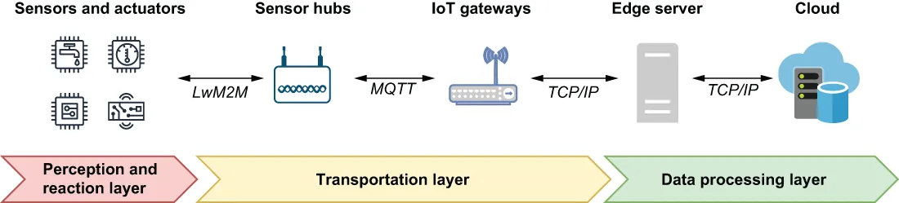

An IIoT platform acts as a bridge between the physical world of industrial equipment and the computational world of automated control systems used to monitor and react to it. As such, one of the primary goals of any IIoT system is the collection and processing of the data generated by all of the physical sensors distributed across various pieces of industrial equipment. While every IIoT deployment is different, they are all comprised of the three logical architectural layers, shown in figure 12.2, which play an important role in the data acquisition and analysis process.
一个 IIoT 平台充当着这样一座桥梁：一头是工业设备的物理世界，另一头是用来监控并响应它的自动化控制系统所处的计算世界。因此，任何 IIoT 系统的主要目标之一，就是采集并处理由分布在各类工业装备上的全部物理传感器所生成的数据。虽然每一个 IIoT 部署都各不相同，但它们都由三个逻辑架构层构成（如图 12.2 所示），而这三层在数据采集与分析流程中扮演着重要角色。

Figure 12.2 The three logical layers of an IIoT architecture ingest data, analyze it, and then present the information so that can be used by humans or by autonomous systems for making contextually relevant decisions in real time.
图 12.2 IIoT 架构的三个逻辑层负责摄入数据、分析数据，然后把信息呈现出来，以便人类或自主系统能够用它来实时做出与情境相关的决策。
Within an IIoT environment, there can be millions of sensors, controllers, and actuators distributed across various pieces of industrial equipment within a single factory location. All of these sensors and devices collectively form what is commonly referred to as the perception and reaction layer because they allow us to perceive what is going on within the physical world.
在一个 IIoT 环境中，单单一个厂区之内就可能散布着数以百万计的传感器、控制器和执行器。所有这些传感器和设备共同构成了通常所说的感知与反应层（perception and reaction layer），因为它们让我们得以感知物理世界中正在发生些什么。